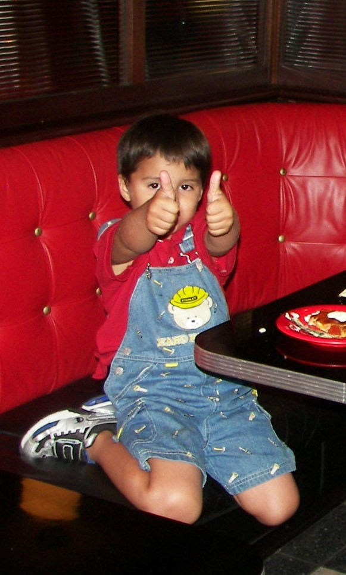

In the Begining
I was born on May 3 2003, in Kaiser Permanente Fontana Medical Center.

Early life
As I was growing up I enjoyed many pleasures that children would enjoy. But Partying was easily one of them.
I would go and endulge myself with the simple pleasures of partying. As seen in the image below I was quite the pary animal.
Even though I clearly lived the life of a Roman Emperor, I still had to attend classes. Partying, although fun, is not a way to attain knowledge and wisdom.
I attened school at various places but the one place where I settled was Stork Elementary.
